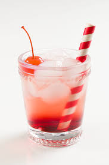

Hello, world! My name is Lilly.
This is a webpage all about me. My likes, dislikes, hopes, dreams, and favorite things.
Biography
I am a senior in highschool and plan to go to college this year once highschool is over. I want to study to become a Physical Therapist or Physician's assistant because I am very interested in these aspects of the medical field.
In my spare time, I love to paint, bake, listen to music, play the piano, or go on walks with my dog. I also love to spend some quality time with friends and familiy. One of my favorite things to do is travel with them and visit new places.

My Favorite Quotation
"It is God who arms me with strength and keeps my way secure" - Psalm 18:32
My Favorite Foods
- Sushi
- Tacos
- Pizza
- Chicken Tenders
- Ice cream
My Top Eight Favorite Movies
- The Parent Trap
- The Notebook
- Safe Haven
- Murder Mystery
- Just Go With It
- The Rise of Skywalker
- Rio
- Kiss and Cry
Countries I'd Like to Visit, and What I'd Like To Do There
- Brazil
- Christ the Redeemer
- Carnival in Rio de Janeiro
- Visit beaches
- Greece
- Visit Santorini
- Go swimming in caves
- Tour the Acropolis
- Norway
- See the Northern Lights
- Visit Bryggen
- See the beautiful landscape
| Favorite Flower | Lilacs | |
|---|---|---|
| Favorite Color | Lavender | |
| Favorite Song | Long Live by Taylor Swift | |
| Favorite Animal | Dog | |
| Favorite Sport | Soccer | |
| Favorite Drink | Shirley Temple |  |
Contact Information
Email: hortonlilly3@gmail.com
Phone: (704) 995 5414